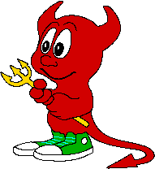
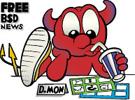
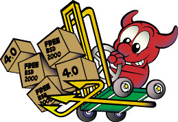
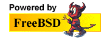

Изображения FreeBSD
Эта страница содержит различные "изображения" FreeBSD. Пожелания по дополнениям можно направлять на адрес www@FreeBSD.org. Пожалуйста, обратите внимание на правила использования этих изображений.
Даемон BSD

Создал Poul-Henning Kamp
Источник: /usr/share/examples/BSD_daemon/ в системах FreeBSD.

 
Логотипы "Powered by FreeBSD"

Старые рекламные баннеры
Правила использования изображений
Логотипы "Powered by FreeBSD" выше можно сгружать и публиковать на персональных или коммерческих веб-сайтах, обслуживаемых машинами под управлением FreeBSD. Использование этого логотипа или изображений, подобных даемонам BSD, для получения прибыли требует разрешений от Brian Tao (создателя логотипа "Powered by FreeBSD") и Marshall Kirk McKusick (владельца авторских прав на образ даемона BSD).

Изображение даемона BSD, подготовленное Poul-Henning Kamp, опубликовано на условиях лицензии "THE BEER-WARE LICENSE". Для получения дополнительной информации обратитесь к файлу README.
Торговые знаки
Фонд FreeBSD обладает правами на несколько торговых знаков, связанных с FreeBSD (в том числе и на сам термин "FreeBSD"). Для получения дополнительной информации об этих торговых знаках ознакомьтесь с соответствующими Правилами и условиями использования торговых знаков FreeBSD.
Последнее изменение: 19 сентября 2026 г. от Vladlen Popolitov